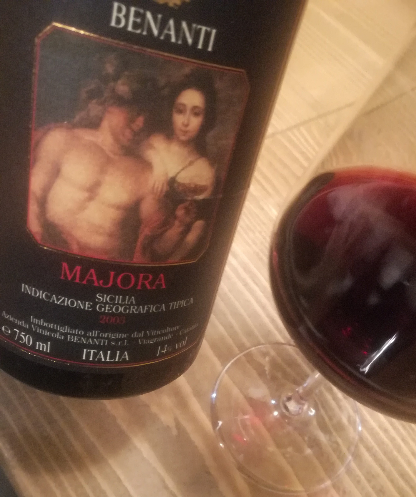
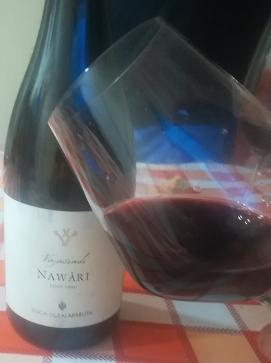

Di Vino o Di Virtù
Suggerimenti sul mondo del vino.
Di Vino o Di Virtù nasce dalle giovani idee di tre studenti della facoltà di filosofia a Palermo, i quali condividono lo stesso amore - oltre che per la cultura filosofica - per la cultura vitivinicola. Infondo un mondo senza cultura, qualsiasi essa sia, sarebbe neutro, vuoto. Non pensate? Di Vino o Di virtù, si propone di stuzzicare le papille gustative e la curiosità dei suoi seguaci, recensendo ogni settimana tre nuove tipologie di vini, e consigliando inoltre, i migliori testi filosofici da leggere, gustandole! Non esiste modo migliore di rilassarsi ed accrescere le proprie conoscenze allo stesso tempo; quindi che aspettate? Fatevi trasportare!COME APPREZZARE AL MEGLIO IL BLOG? Beh, facile, prendete una buona bottiglia, accomodatevi sulle vostre comode poltrone e provate ad emozionarvi con noi.

VIN SANTO DEL CHIANTI CASALBOSCO 2009
Un trebbiano in purezza dal colore giallo ambrato,al palato risulta molto fine ed elegante. Al naso si presenta molto fruttato e speziato con note di anice,datteri,violette appassite e mandorle.
Scopri di più...

MAJORA BENANTI 2003
Un blend di Nero d'Avola, Syrah, Tannat, Petit Verdot. Un rosso rubino intenso con riflessi violacei e rosso granato. Al naso risulta molto etereo, floreale con note di legno nobile,tabacco, cuoio e pepe nero. A palato è un vino molto armonico e di notevole persistenza.
Scopri di più...

NAWARI DUCA DI SALAPARUTA 2008
Un pinot nero in purezza dal colore rosso rubino con sfumature di granata, al palato risulta morbido ed armonico con un acidità ben strutturata. Al naso spiccano sentori balsamici ed aromatici con note di liquirizia, amarena e cuoio.
Scopri di più...